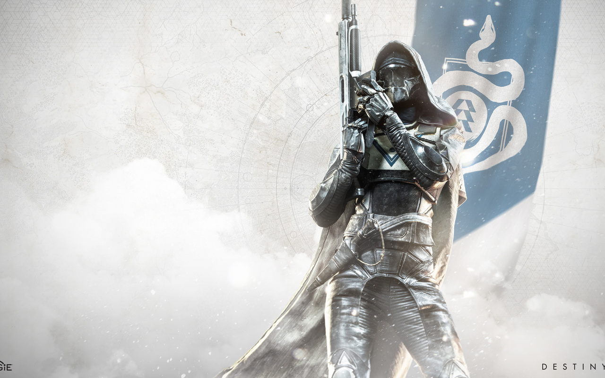
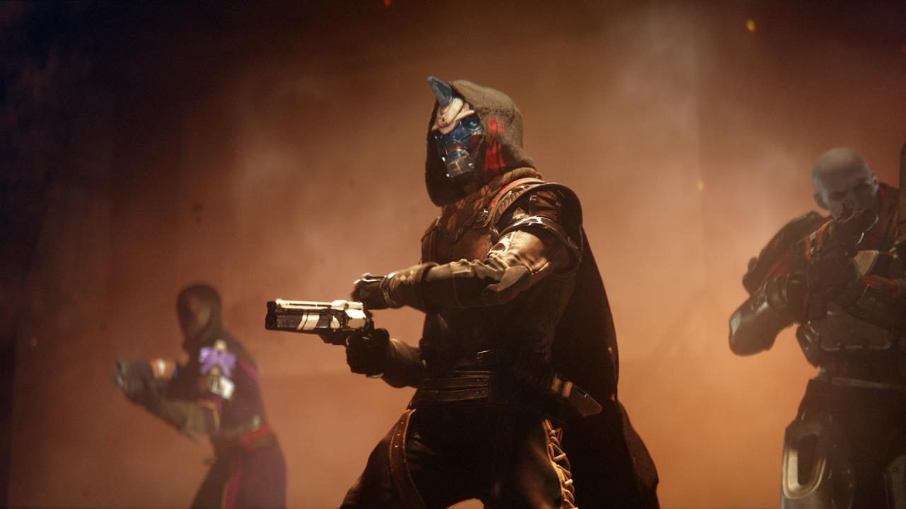
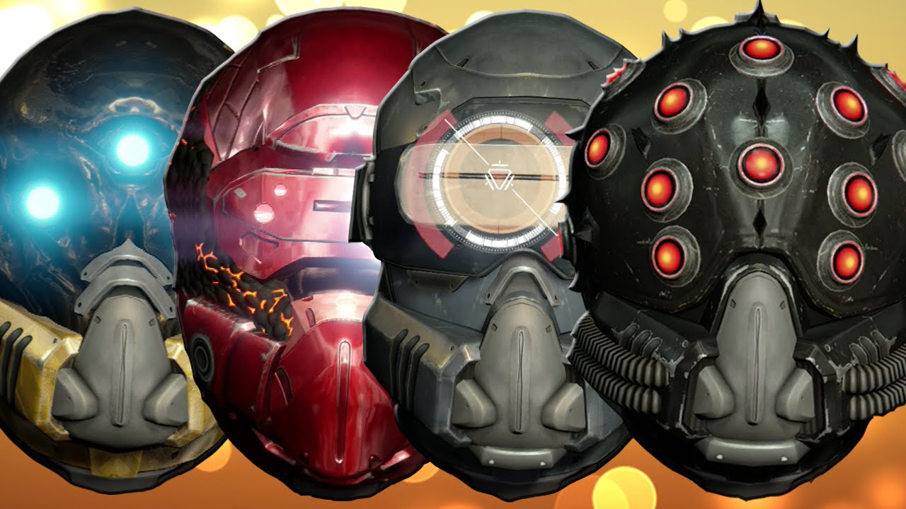

Hunters are the most popular class in the game,and for good reason, their agility and look attract most people to them.
As a hunter you have access to a range of roles between your three subclasses such as support, damage, ad clearing etc. As a hunter your movement is really slippery between your double to triple jumps,roll evade, and invisibility you are a hassle to keep track of.

As a hunter you swear to your cloak/cape and you are mentored by cayde-6, a charismatic exo (robot who used to be human) who is undoubtly the best of the three mentors. Cayde is a goof ball but when it comes down to it he always gets the job done.
 Meet CaydeWhen it comes to the armor, hunters have a versatile gear fit for most situations need more boss damage you can equip a certain helmet for that, need more time in your super equip a certain armor peice. Whatever the situation needs, you as a hunter have access to it.

So how about it? Are you going to swear to your cloak and become a hunter or do you have other plans?
Home